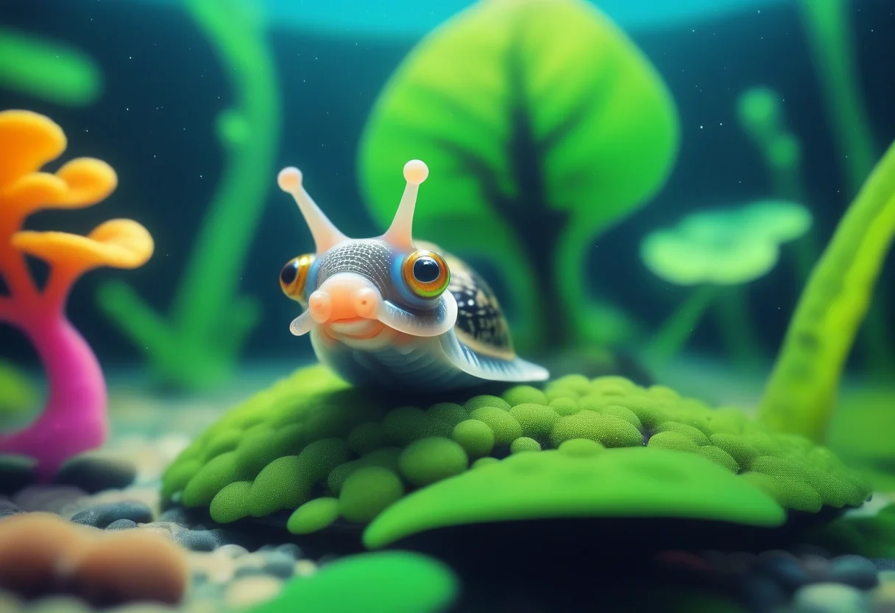

Schnecken im Aquarium – Plage oder nützlicher Helfer?
Kaum ein Thema spaltet die Aquaristik-Gemeinde so sehr wie das Thema Schnecken. Für die einen sind sie die schlimmste Plage, die das geliebte Becken befallen kann, für die anderen ein unverzichtbarer Teil des Ökosystems. Die Wahrheit liegt – wie so oft – in der Mitte.
Schnecken erfüllen in einem gut eingefahrenen Aquarium wichtige Aufgaben: Sie fressen Futterreste, abgestorbene Pflanzenreste und Mulm, halten den Bodengrund locker und lockern mit ihren Ausscheidungen den Nährstoffkreislauf. Posthornschnecken, Blasenschnecken und Co. sind die „Reinigungskräfte" der Unterwasserwelt. Problematisch wird es erst, wenn das biologische Gleichgewicht kippt und sich die Schnecken explosionsartig vermehren – dann spricht man umgangssprachlich von einer „Schneckenplage".
In diesem Ratgeber zeigen wir dir, wie du Schnecken im Aquarium bekämpfen kannst, ohne gleich zur Chemiekeule greifen zu müssen. Wir erklären, welche Arten nützlich sind, wie eine Plage entsteht und mit welchen biologischen, mechanischen und vorbeugenden Maßnahmen du dein Becken wieder ins Gleichgewicht bringst.
Die häufigsten Schneckenarten im Aquarium
Bevor du mit der Bekämpfung beginnst, solltest du wissen, welche Schneckenarten sich in deinem Becken tummeln. Denn nicht jede Schnecke ist automatisch ein Schädling – im Gegenteil: Viele sind nützlich und nur in Überzahl problematisch.
Blasenschnecke (Physella acuta)
Die Blasenschnecke ist die wohl bekannteste „Gefahr" in der Aquaristik. Sie vermehrt sich rasant, ist getrenntgeschlechtlich und legt Eier in durchsichtigen Gelege-Klümpchen ab, die an Pflanzen und Deko kleben. Vorteile: Frisst effektiv Algenbeläge, Futterreste und Mulm. Nachteile: Vermehrt sich unter guten Bedingungen explosionsartig und kann zur echten Plage werden. Die Gelege sehen an der Scheibe oft unschön aus.
Posthornschnecke (Planorbarius corneus)
Die dekorative Posthornschnecke mit ihrem flachen, braunen Schneckenhaus ist bei vielen Aquarianern beliebt. Sie gehört zu den Lungenschnecken und atmet atmosphärische Luft, weshalb man sie regelmäßig an die Wasseroberfläche kommen sieht. Vorteile: Wunderschön anzusehen, friedlich, frisst abgestorbenes Pflanzenmaterial. Nachteile: Vermehrt sich ebenfalls zügig und ist bei Überpopulation genauso problematisch wie die Blasenschnecke.
Turmdeckelschnecke (Melanoides tuberculatus)
Die Turmdeckelschnecke ist der nützlichste „Bodenarbeiter" unter den Aquarienschnecken. Mit ihrem langen, spitzen Gehäuse gräbt sie sich durch den Bodengrund und lockert diesen dabei auf – vergleichbar mit dem Regenwurm im Garten. Vorteile: Belüftet den Bodengrund, beugt Faulstellen vor, frisst Detritus und Futterreste. Nachteile: Vermehrt sich zwar auch, aber deutlich langsamer und kontrollierter. Lebendgebärend – die Jungen kriechen fertig entwickelt aus der Mutter.
Napfschnecke (Ferrissia sp.)
Die kleinen, flachen Napfschnecken werden oft gar nicht bemerkt. Sie leben versteckt auf Steinen, Scheiben und Pflanzen und ernähren sich von Biofilmen. Vorteile: Harmlose Mitbewohner, die kaum auffallen und Algenbeläge abweiden. Nachteile: Kommen meist ungewollt mit neuen Pflanzen ins Becken, sind aber nur in extremen Fällen problematisch.
Wie kommen Schnecken ins Aquarium?
Die berühmte Frage vieler Einsteiger: „Ich habe mir doch gar keine Schnecken gekauft – woher kommen die?" Die Antwort ist einfach: Schnecken sind die klassischen blinden Passagiere. Sie schleichen sich über verschiedene Wege ins Becken ein.
- Neue Wasserpflanzen: Der mit Abstand häufigste Einschleppungsweg. Schnecken oder ihre Eigelege sitzen an Blättern, Stängeln oder im Wurzelbereich. Besonders Stängelpflanzen aus dem Handel sind oft betroffen.
- Steine, Wurzeln und Holz: Dekorationsmaterial aus dem Zoohandel oder gesammelte Naturmaterialien können Schnecken oder Gelege enthalten.
- Wasser beim Umsetzen: Wenn Fische oder Pflanzen in Transportbeuteln ins Becken umgesetzt werden, gelangt gelegentlich Wasser mit Schneckeneiern ins Becken.
- Lebendfutter: Selten, aber möglich: Mit Lebendfutter aus natürlichen Gewässern können Schnecken eingeschleppt werden.
Prävention beim Kauf: Neue Pflanzen solltest du vor dem Einsetzen gründlich unter fließendem Wasser abspülen und idealerweise 1–2 Wochen in einem Quarantänebecken beobachten. Auch ein Bad in verdünnter Essiglösung oder eine kurze Kaliumpermanganat-Behandlung tötet viele Eigelege ab. Alternativ hilft auch das sog. Dip-Verfahren in einer Wasserstoffperoxid-Lösung.
Wann werden Schnecken zur Plage?
Schnecken an sich sind kein Problem. Zur Plage werden sie erst, wenn die Bedingungen in deinem Aquarium ihre Vermehrung explosionsartig fördern. Drei Hauptursachen sind dafür verantwortlich:
1. Überfütterung: Der mit Abstand häufigste Grund für eine Schneckenplage. Futterreste sind ein Festmahl für Schnecken – wer viel füttert, hat viele Schnecken. Füttere daher immer nur so viel, wie die Fische in 2–3 Minuten fressen. Lieber einmal weniger als einmal zu viel.
2. Nährstoffüberschuss: Hohe Nitrat- und Phosphatwerte bieten Schnecken reichlich Nahrung, da diese Nährstoffe das Algenwachstum fördern – und Algen sind eine der Hauptnahrungsquellen vieler Schneckenarten.
3. Fehlende Fressfeinde: In der Natur regulieren Raubschnecken, Kugelfische, Schmerlen und bestimmte Krebsarten den Schneckenbestand. Im heimischen Gesellschaftsbecken fehlen diese oft, sodass sich die Population ungebremst vermehren kann.
🛒 Schneckenfressende Fische
Natürliche Fressfeinde wie Schmerlen, Kugelfische und Raubschnecken helfen, den Schneckenbestand auf natürliche Weise zu regulieren.
👉 Schmerlen & Fressfeinde bei Amazon ansehenBiologische Bekämpfung – die elegante Lösung
Die biologische Bekämpfung nutzt die Nahrungskette: Du setzt gezielt Tiere ein, die Schnecken fressen. Das funktioniert erstaunlich gut, erfordert aber etwas Planung.
Schmerlen als Schneckenvertilger
Schmerlen sind die bekanntesten schneckenfressenden Fische. Besonders effektiv sind die Prachtschmerle (Yunnanilus splendens) und die Schachbrett-Schmerle (Botia sidthimunki), auch als „Siamesische Saugschmerle" bekannt. Sie durchpflügen den Bodengrund und knacken selbst kleinere Schneckenhäuser.
Wichtig: Schmerlen sind Gruppentiere und sollten mindestens in 5er-Gruppen gehalten werden. Sie brauchen ausreichend Beckenvolumen (mindestens 80–100 Liter) und lassen sich nicht mit allen Fischarten vergesellschaften – Zwerggarnelen können in kleinen Becken bedrängt werden.
Kugelfische (Carinotetraodon travancoricus)
Der Zwergkugelfisch ist ein faszinierender Schneckenvertilger. Mit seinem papageienähnlichen Schnabel knirscht er selbst härtere Schneckenhäuser auf. Allerdings ist er ein Eigenbrötler: Er ist revierbildend, braucht Brackwasser-Zugaben zur Zucht und verträgt sich nicht mit langflossigen Fischen oder Garnelen.
Raubschnecken (Anentome helena)
Eine elegante Lösung für kleinere Becken: Die Raubschnecke Helena (Clea helena) ist selbst eine Schnecke, die gezielt andere Schnecken jagt. Sie gräbt sich ein, nimmt die Spur eines Beutetiers auf und lähmt es mit einer Giftinjektion. Die Vermehrung ist langsam und überschaubar. Raubschnecken vertragen sich gut mit den meisten Fischen und Garnelen.
Manuelle Methoden – Absammeln und Fallen
Wer ohne neue Mitbewohner arbeiten möchte, kann die Schnecken auch mechanisch entfernen. Die Methoden sind altbewährt und überraschend effektiv.
Absammeln per Hand
Die einfachste Methode: Scheiben, Pflanzen und Deko nach Einbruch der Dunkelheit absuchen, wenn viele Schnecken aktiver werden. Besonders Posthornschnecken sitzen nachts bevorzugt an den Scheiben und lassen sich leicht mit dem Finger oder einer Pinzette abstreifen. In ein Eimerchen mit Beckenwasser sammeln und über die Toilette oder im Garten entsorgen – bitte niemals in den nächsten Bach aussetzen!
Die Bierfalle – Schritt für Schritt
Eine Bierfalle nutzt den Geruch von Hefe, der Schnecken magisch anzieht. So baust du sie:
- Ein kleines Glas (z. B. ein sauberes Joghurtbecher-Glas) mit Wasser und einem Schuss Bier (ca. 1–2 cm hoch) füllen.
- Das Glas schräg in den Bodengrund drücken, sodass die Öffnung knapp unter der Wasseroberfläche liegt.
- Über Nacht wirken lassen. Schnecken kriechen hinein und ertrinken.
- Am nächsten Morgen das Glas leeren, neu bestücken und ggf. an einer anderen Stelle platzieren.
Tipp: Bierfalle sparsam einsetzen – zu viel Bier kann das Wasser belasten. Pro 100 Liter Becken eine Falle reicht völlig.
Die Gurkenfalle
Wer keinen Biergeruch im Wohnzimmer möchte, greift zur Gurkenfalle. Schnecken lieben überbrühtes Gemüse.
- Eine Scheibe Bio-Gurke (ca. 0,5 cm dick) in kochendem Wasser kurz blanchieren – das macht sie weicher und „attraktiver".
- Die Gurkenscheibe in ein kleines, durchsichtiges Gefäß (z. B. ein Einmachglas) legen und mit etwas Aquarienwasser auffüllen.
- Das Gefäß über Nacht ins Becken stellen. Schnecken werden von der Gurke angelockt und kriechen hinein.
- Am Morgen das Gefäß samt Schnecken entnehmen und die Gurke entsorgen.
Die Löwenzahnfalle
Löwenzahnblätter sind ein natürlicher Lockstoff für viele Schneckenarten:
- Frische Löwenzahnblätter waschen und kurz überbrühen.
- Die Blätter abends auf den Bodengrund legen oder in eine Schale geben.
- Nach wenigen Stunden sind die Blätter mit Schnecken bedeckt – einfach mitsamt den Schnecken entnehmen.
🛒 Schneckenfallen & Helfer
Praktische Schneckenfallen und Zubehör für die mechanische Bekämpfung – sauber, einfach und ohne Chemie.
👉 Schneckenfallen bei Amazon entdeckenWarum chemische Schneckenkiller problematisch sind
Im Zoohandel werden diverse Schneckengifte angeboten – häufig auf Basis von Kupfersulfat oder Metaldehyd. Davon ist dringend abzuraten, und das aus mehreren Gründen.
Wirkung auf Wirbellose: Schneckengifte töten nicht nur die Plagegeister, sondern auch Garnelen, Krebse und andere Wirbellose. In einem Gesellschaftsbecken mit Red-Cherry-Garnelen, Amanos oder Zwergkrebsen ist der Einsatz ein Todesurteil für die Wirbellosen-Population.
Nitritpeak und Bakteriensterben: Wenn hunderte Schnecken auf einmal sterben und verwesen, entsteht eine massive biologische Belastung. Die nützlichen Filterbakterien werden überlastet, ein gefährlicher Nitritpeak kann die Folge sein – dieser wiederum bringt empfindliche Fische in Lebensgefahr.
Rückstände und Resistenzen: Kupferhaltige Mittel reichern sich im Bodengrund und in Pflanzen an und können noch Monate nach der Anwendung junge Garnelen schädigen. Außerdem entwickeln Schnecken mit der Zeit Resistenzen, sodass eine erneute Behandlung wirkungslos bleibt.
Fazit: Chemische Schneckenmittel sind der falsche Weg. Sie schaffen mehr Probleme, als sie lösen.
Die eigentlichen Ursachen bekämpfen
Die nachhaltigste Methode gegen eine Schneckenplage ist nicht die Bekämpfung der Schnecken selbst, sondern die Beseitigung der Ursachen. Wer die Rahmenbedingungen ändert, hat langfristig Ruhe.
Futtermenge konsequent reduzieren
Wie bereits erwähnt, ist Überfütterung der Hauptauslöser. Füttere deine Fische gezielt 1–2 Mal täglich mit der Menge, die in 2–3 Minuten vollständig gefressen wird. Verwende einen Futterring oder eine Futterklappe, damit das Futter nicht unkontrolliert im Becken verteilt wird. Futterreste nach 5 Minuten absaugen.
Mulm absaugen und Bodengrund reinigen
Organische Abfälle sind der Hauptenergielieferant für Schnecken. Einmal pro Woche Mulm aus dem Bodengrund absaugen – idealerweise mit einem Mulmsauger oder Schlauch. Dabei werden abgestorbene Pflanzenteile, Fischausscheidungen und Futterreste entfernt, die den Schnecken als Nahrung dienen.
Wasserwerte kontrollieren
Hohe Nitratwerte (> 50 mg/l) und Phosphatwerte (> 1 mg/l) sind ein Indikator für Nährstoffüberschuss. Regelmäßige Wassertests und ein wöchentlicher Wasserwechsel von 20–30 % helfen, die Werte stabil zu halten. Bei stark belastetem Wasser kann ein Teilwasserwechsel von 50 % sinnvoll sein – allerdings schrittweise, um die Fische nicht zu stressen.
Pflanzenpflege und Schnitt
Abgestorbene und welkende Pflanzenteile sofort entfernen. Sie sind eine wahre Nahrungsquelle für Schnecken. Gleichzeitig fördert ein regelmäßiger Rückschnitt das gesunde Wachstum der Pflanzen – und gesunde Pflanzen konkurrieren mit Algen um Nährstoffe, was den Schnecken die Nahrungsgrundlage entzieht.
Schnecken gezielt halten – die nützlichen Helfer
Bevor du alle Schnecken aus deinem Aquarium entfernst, denke daran: Einige Arten sind wertvolle Mitbewohner. Turmdeckelschnecken durchpflügen den Bodengrund, Posthornschnecken fressen abgestorbene Pflanzenteile, Napfschnecken halten Biofilme in Schach. Schnecken sind ein Indikator für ein gesundes Aquarium – wenn du sie gezielt in kleiner Population hältst, regulieren sie das Ökosystem und zeigen dir durch ihr Wohlbefinden, dass dein Becken in Ordnung ist.
Es geht also nicht darum, das Aquarium schneckenfrei zu bekommen, sondern die Balance zu halten. Eine kleine, stabile Population ist wünschenswert – eine explosionsartige Vermehrung ist das Problem.
Fazit – Schneckenplage ohne Chemie in den Griff bekommen
Eine Schneckenplage ist kein Grund zur Panik und schon gar kein Grund, zur Chemiekeule zu greifen. Mit der richtigen Strategie bekommst du das Problem dauerhaft in den Griff:
- Ursachenforschung: Fütterst du zu viel? Ist der Mulm zu dick? Stimmen die Wasserwerte?
- Manuelle Reduktion: Absammeln, Bier- oder Gurkenfalle für schnelle Erfolge.
- Biologische Regulierung: Fressfeinde wie Schmerlen, Kugelfische oder Raubschnecken einsetzen.
- Prävention: Neue Pflanzen quarantänisieren, Futterreste vermeiden, regelmäßig Mulm absaugen.
Mit etwas Geduld und der richtigen Pflege findest du die Balance in deinem Aquarium. Schnecken werden so vom Plagegeist zum nützlichen Helfer, der dir hilft, ein stabiles und gesundes Ökosystem zu erhalten.
Du hast weitere Fragen zur Schneckenbekämpfung oder anderen Aquaristik-Themen? Schreib uns eine Nachricht – wir teilen unsere Erfahrungen gerne mit dir!
🛒 Gemüse & Naturköder für Schneckenfallen
Bio-Gurken und andere Gemüsesorten eignen sich perfekt als Köder für selbstgebaute Schneckenfallen.
👉 Bio-Gemüse bei Amazon ansehen